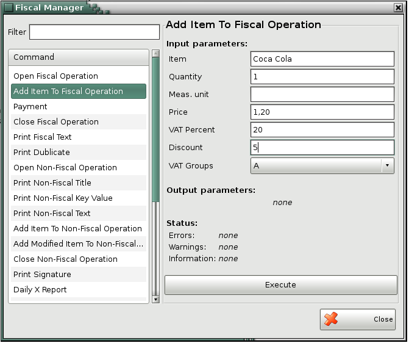

Fiscal Manager
The window Fiscal Manager contains commands, which will be sent to and executed by the fiscal device. From the list with commands, select the one which you want to send to the fiscal device. Depends on the type of the commands, in the right part of the window it is necessary to fill-in the input and/or output parameters.
Field Filter is for fast search of commands:

Button Execute sends the command to the fiscal device.
�2006-2015 Microinvest, All rights reserved